Best Work Cafes in NYC
Nov 15 - Written by Bonnie and Emily
Being a college student in NYC was kind of perfect because there was never a shortage of coffee shops and cafes nearby and we were always working, tired and in need of some caffeine.
Since we often got tired of being stuck in our apartment or on campus, we liked to spend our weekends camped out at a coffee shop. We know looking for a perfect coffee shop to work at can be very difficult and there are so many great cafes around the city so we put together a list of all the places we have enjoyed working at. Hopefully our list will also help you decide which place is best without having to run around the city all day looking for the perfect spot!
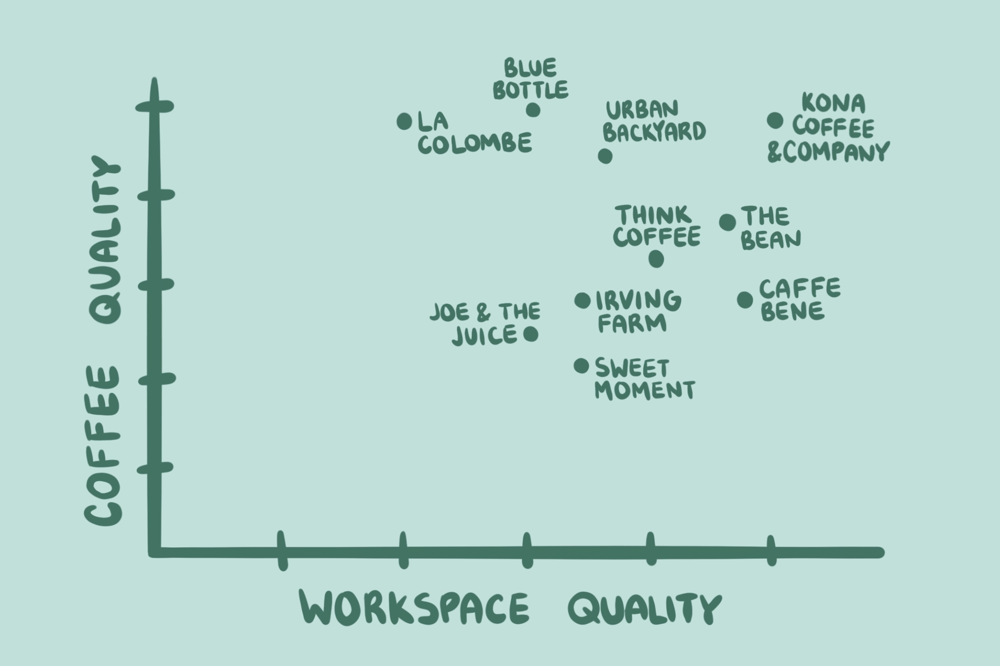
Kona Coffee and Company - 57 2nd Ave, New York, NY

Kona Coffee and Company became our goto spot to work during our last year at NYU, especially since it was so close to our apartment and the NYU campus. Their drinks are delicious and their menu is very unique especially since the cafe is Hawaiian influenced and has great Kona coffee beans. One of our most favorite drinks from the menu is their warm Honey Almond Latte that has the perfect fusion of toasty and sweet flavors to warm you up. On top of that, their atmosphere and interior is so chill with great music constantly DJed by the baristas. Since their tables are so large, it's perfect for working on group projects or just spreading out all your work and materials that you have for the day. Kona has all the best elements of the perfect work cafe in one spot.
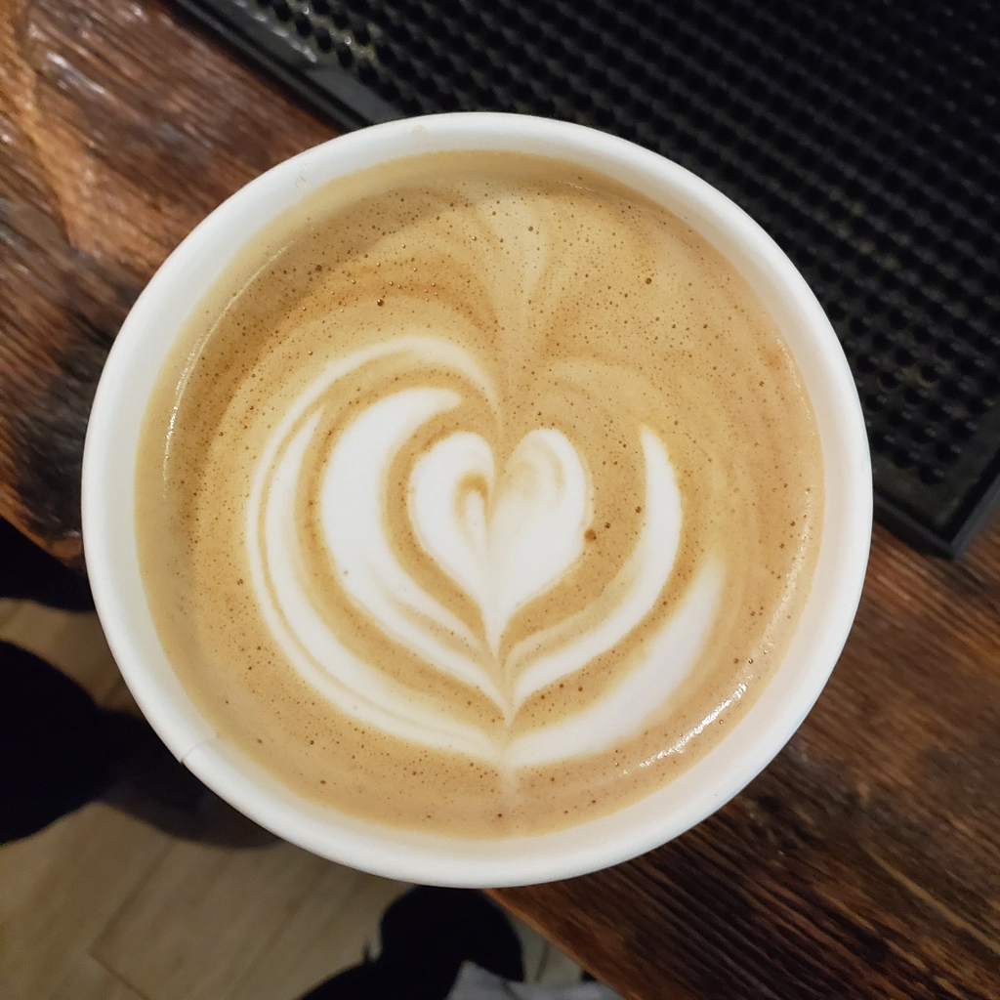The Bean - 31 3rd Ave, New York, NY
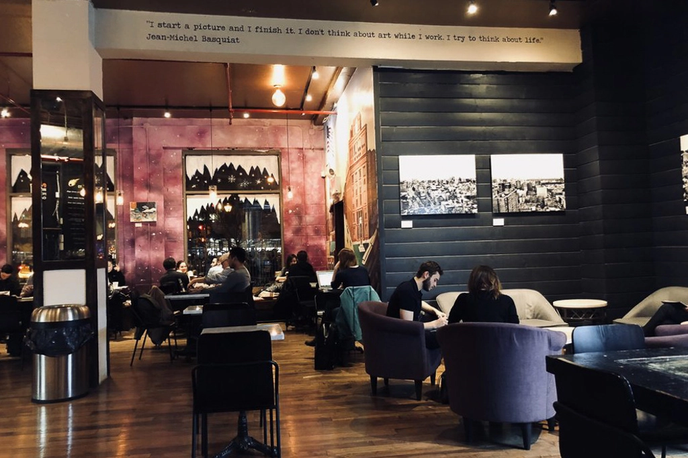Though our favorite Bean location closed down, this location by Astor Place maintains their vibrant atmosphere. Their colorful interior design and friendly baristas make this a great place to have a relaxing and fun work session. Their large menu provides a great spot for any tea or coffee drinker, including their great partnership with the donut shop Dough to provide a daily batch of delicious donuts that are a must try! The Bean also has a boisterous environment where you can hear a lot of cafe-goers working alongside you while still having plenty of space for you to complete your work. Not to mention the Bean always has great offers and discounts for students and multiple locations around the city that are also super convenient!
Urban Backyard - 180 Mulberry St, New York, NY 10012
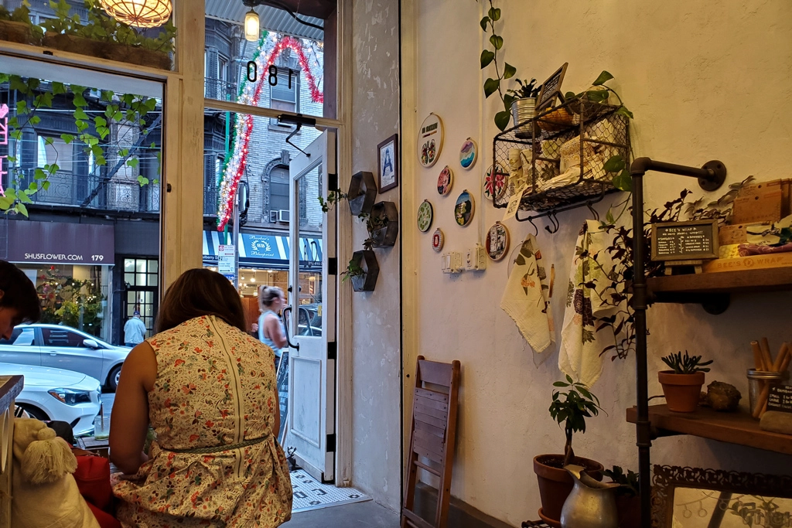Urban Backyard is a hole in the wall cafe that we had stumbled upon while finding a new cafe to work in. Although the cafe has very limited space, their ambience is so peaceful with their walls and entrance covered with plants and flowers. They also often open up their large windows for a great semi outdoor table space where you can enjoy the great weather outside while getting all your work done. Their menu also has some great flavors such as yuzu and mint, including a variety of tea, coffee, and even carbonated mixed drinks--also don’t forget to try one of their super cute succulent cupcakes! Located downtown, this cafe is also near so many great restaurants where you can grab a bite after a productive work session.
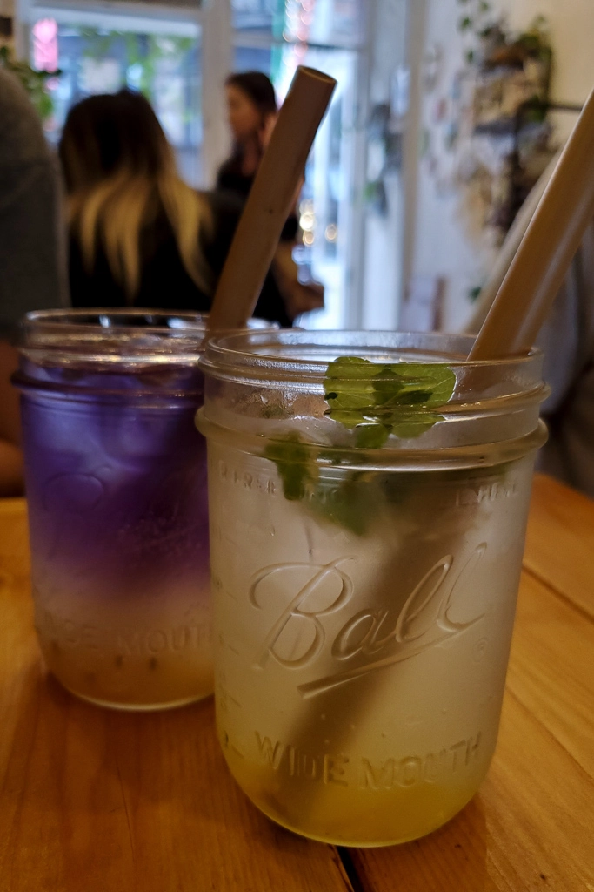
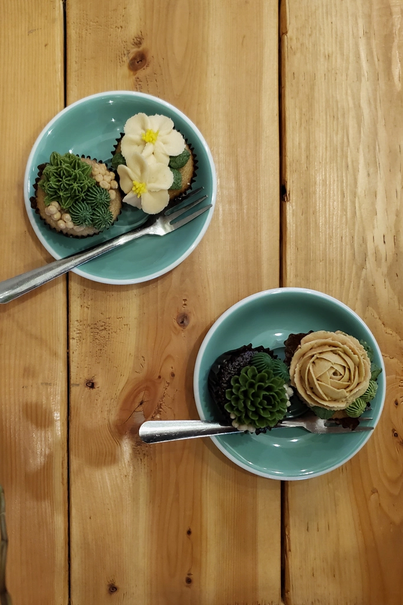
Caffe Bene - 39 W 32nd St, New York, NY
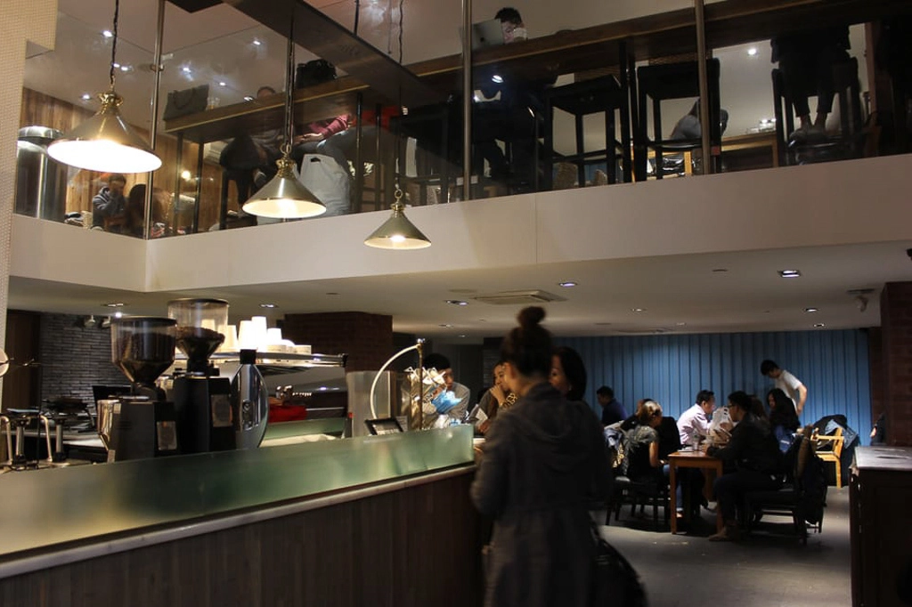Caffe Bene is one of the largest cafes on this list with two floors that provide a great selection between a quiet space upstairs to do some heads down work or downstairs for a more social work session with friends. They also have tons of spaces with outlets and a fantastic selection of korean music playing. Their menu is also so large that they have any item from coffee to cake to pastry bread and even bingsoo. In the upstairs area there's also a lot of corner seating and tables to create your own personal work corner and they also have very comfortable seating and couches if you want to get comfy and cozy. Their location in midtown is also a great opportunity for you to explore other parts of the city and be able to work while going on a New York adventure!
Think Coffee - 248 Mercer St, New York, NY
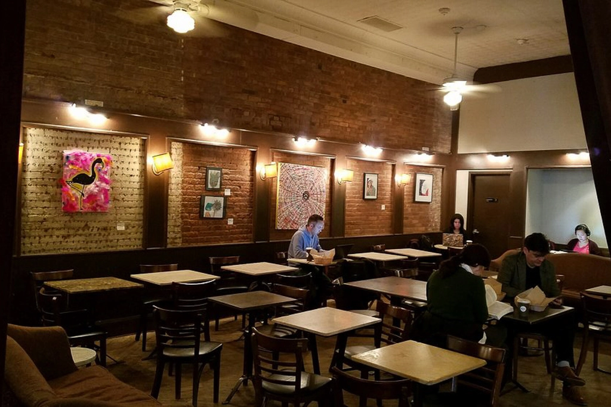Located right by the NYU campus, this location is often packed most days of the week with students and professors but is still a great place for a quick work session. Think is typically hustling and bustling but they have greatly priced drinks with a large menu for any variety of coffee or tea you may be craving--not to mention that their pastries are also very yummy. They have great spots near the window or inside the cafe for a nice change of scenery. Since so many people walk in and out of the cafe, there's also plenty of people watching to find some more inspiration while working. If you’re an NYU student definitely hit up this spot because they also have killer wifi and a great student discount!
Irving Farm - 78 W 3rd St, New York, NY

This location for Irving Farm offers a spacious work environment and a great peaceful atmosphere for doing some quiet work. Especially since the cafe is so close to campus, it's a great place to take some time to do a quick work session in between classes. Their seats offer a variety of individual tables and larger group tables that's suitable for any type of project you may need to work on. This location is also often pretty quiet and is great for anyone that prefers a serene environment with calming background music. You can enjoy their simple yet tasty drinks and food options while working. Irving also has great large windows that provide all the natural light you’ll need to read or write.
Blue Bottle Coffee - 71 Clinton St, New York, NY
For a quiet spot to work with some good coffee, this Blue Bottle Coffee location is the ideal place to go. Even with the limited seating available, this area of the Lower East Side is quiet enough to still be able to secure yourself a space to work on a Saturday afternoon. With all the floor to ceiling windows making up a large portion of the shop, you’ll get plenty of natural light to work in. If you’re a fan of mochas, this is the place to go for a really good one and has become the goto drink at any of the Blue Bottle locations across the city.
Sweet Moment - 106 Mott St, New York, NY
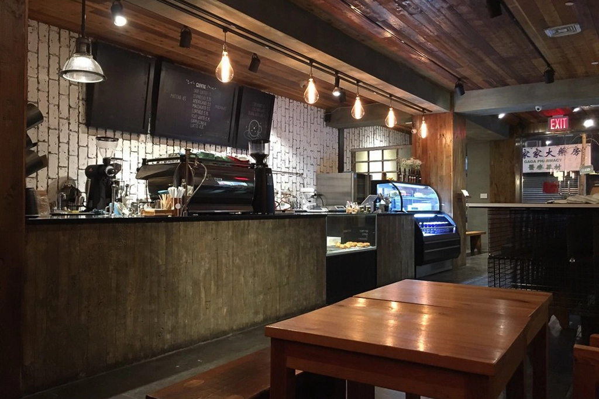Sweet Moment, home of those cute bear lattes you may have seen on social media, is a great place to get some work done any day of the week. With plenty of seating and fairly easy access to outlets, you can’t go wrong with coming here when all your other favorite coffee shops are jam packed. They’re also open late everyday so it's perfect for those long days of studying and if you get hungry, you can easily step out into Chinatown for a quick meal. Though we haven’t tried the sweet treats available, Sweet Moment offers a variety of treats like bingsoo (Korean shaved ice dessert) and waffles. This place became a reliable spot to hit up when we were in need of a place to work and didn’t have the time to run around the city looking for a space to work at.
La Colombe - 400 Lafayette St, New York, NY
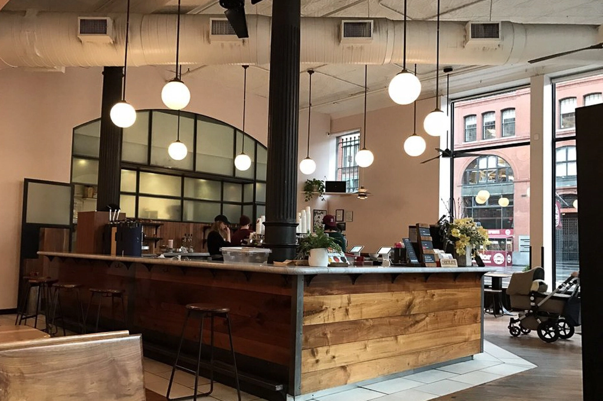La Colombe, a favorite for drinks but less so for working due to how busy they tend to get on both weekdays and weekends. However, if you are in need of a spot to do some work and dont mind some noise, early mornings at La Colombe are perfect because everyone is grabbing their drinks to go and there is ample space to sit and work. With a fairly classic menu of drinks available, La Colombe stands out for the quality of their coffee and efficient service. It’s hard to walk by without almost always seeing a long line wrapping around the counter, but don’t be fooled, their efficient ordering system makes the line go by quickly.
Joe and the Juice - 67 Spring St, New York, NY
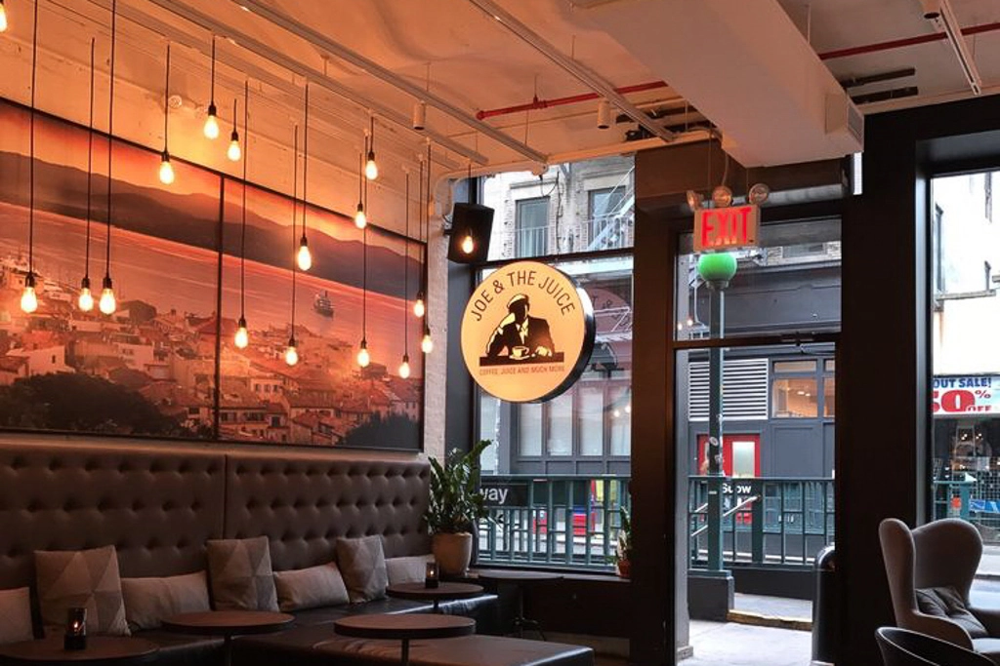If coffee or tea isn’t your thing, then Joe and the Juice may be the right place for you! Located in the heart of SoHo, Joe and the Juice offers plenty of space to work, yummy juices and smoothies, and a variety of seating options. Since their non coffee and tea options are on the pricier side, this place is one of those places you go to every once in a while for a change of scenery. From the vibrant atmosphere to the variation in lighting throughout the juice shop, there is surely the perfect spot for you to enjoy your drink that’ll fuel you throughout your work session.